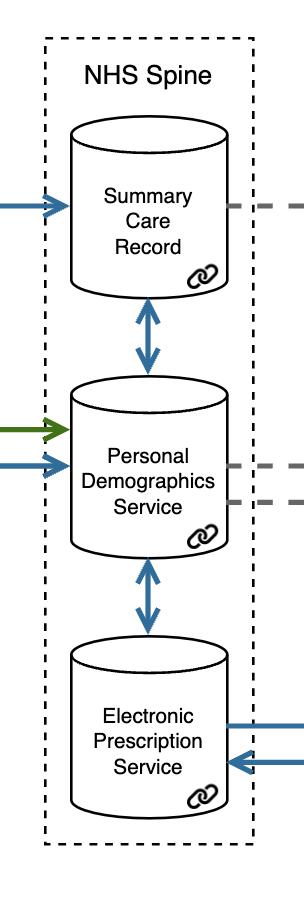
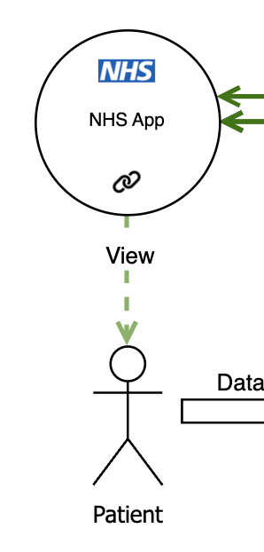
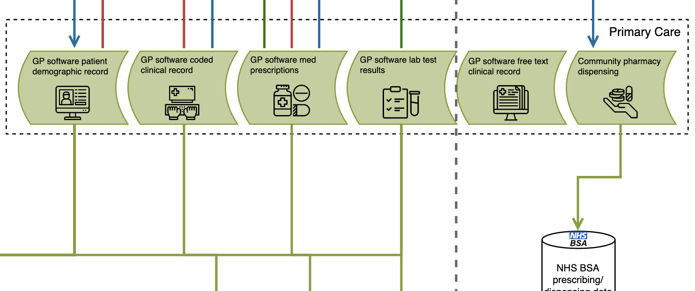
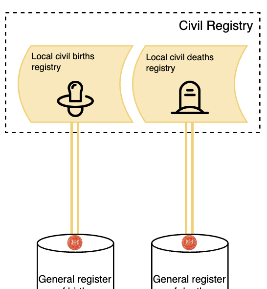
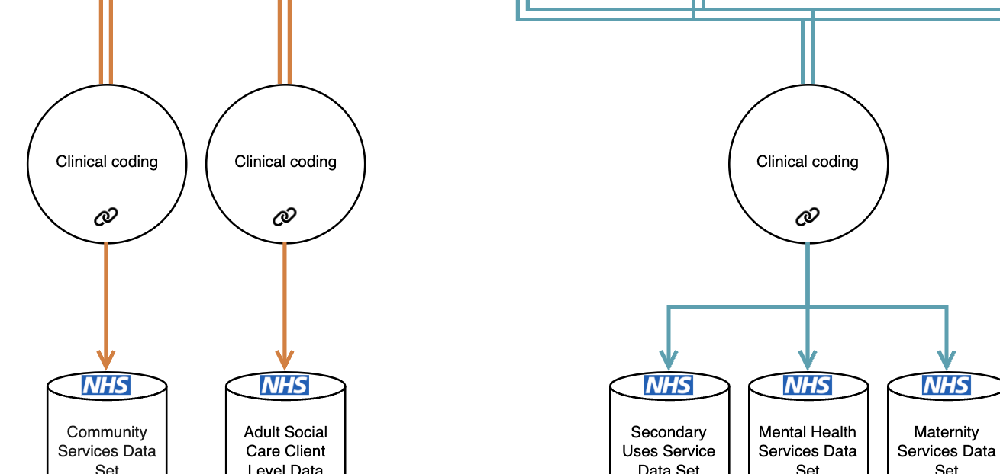
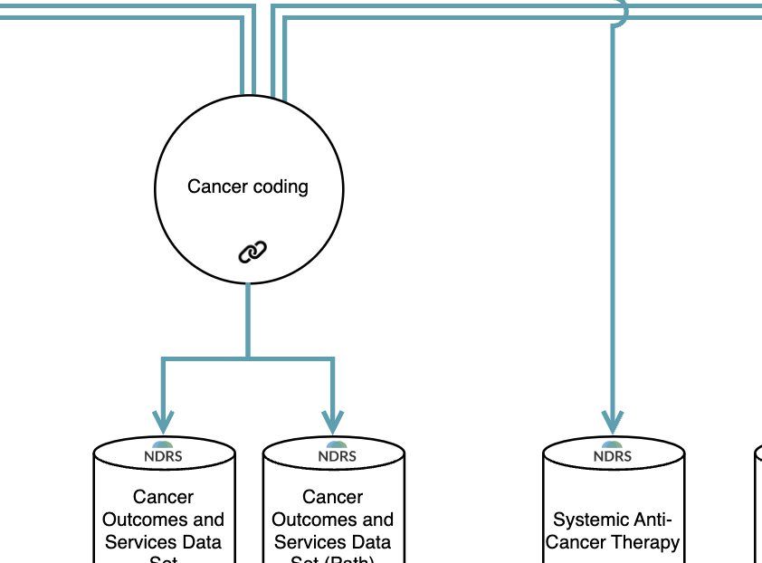

Summary of Data Flows
Early preview v0.1
This page contains an overview of the broad classifications of data flow from the main schematic. At present, there is clear division in architecture that supports direct care (top half of schematic) and architecture that supports other secondary uses (bottom half of schematic).
Direct care
NHS Spine

The NHS Spine pulls in core clinical data from various NHS systems, including GP practices, hospitals, and other care settings, to provide a national source of truth for the most vital patient information. Components include:
- Personal Demographics Service (PDS), serving as a central, authoritative source of patient demographic information with each patient identified through an NHS number. Patient records can be updated through primary and secondary care software, and it serves as a master patient index for other digital systems or for analytics.
- Summary Care Record (SCR), containing key clinical information such as allergies, medications, and adverse reactions. This data is sourced primarily from GP systems and is used to support direct patient care across different NHS settings, ensuring that essential information is always available to clinicians when needed.
- Electronic Prescription Service allows prescriptions from primary, community, and hospitals to be sent to pharmacies that dispense medications.
NHS App

The NHS App serves as a patient-facing portal that both various types of data, and provides services directly to patients. It interfaces with GP systems to allow patients to book appointments and order repeat prescriptions. It also pulls in data from GP systems and the NHS Spine to enable patients to view their medical records. Additionally, it may integrate with referral systems to enable patients to view their hospital referral and appointment statuses, and average waiting times.
Other secondary uses
GP data (NHS and other) extractions

Primary care systems in the NHS (EMIS, TPP, Vision) offer an Application Programming Interface (API) which allows interface with the clinical system, and bulk extraction of patient data. This enables the onwards flow of most data tables within the source systems, including diagnosis codes, prescriptions, referrals, test results, and demographic information. These data flows support numerous secondary uses including population health, service planning, and research. Extractors include NHS organisations, as well as large research databases who offer access to collected data for consumers, and companies who may provide analytical services and products built on the data.
Births & deaths

Births and deaths are reported through established systems of forms and submissions to the level of registration districts. Records here are collated upwards to the General Register Office who hold national records for births and deaths, as well as marriages and civil partnerships. The Office of National Statistics uses this to create the analysis-ready Civil Registrations of Death dataset, that provides patient outcomes that join onto other datasets.
NHS Digital submissions

Secondary care data related to patient attendances, diagnoses, and procedures, are largely found within free text in source systems. These are captured through a process of clinical coding, by teams of specialised coders in each hospital, who read through patient records and record the most important information relevant for each episode. This is turned into data tables (e.g. Secondary Uses Service), and submitted to the NHS through a standard system, where data is used both for reimbursements, and for creating analysis datasets (such as the Hospital Episode Statistics). Data for analysis and linkage to other sources are made available through the Data Access Request Service (DARS).
National Disease Registration Service

The National Disease Registration Service (NDRS) collects data on specific diseases and conditions, primarily cancer and rare diseases. Data is collected in hospitals through a mixture of manual abstraction and coding (typically by cancer audit teams), or by automated extraction from EHR systems (such as chemotherapy prescribing systems or radiology information systems). The resulting datasets include the Cancer Outcomes and Services Dataset (COSD), and the Systemic Anti-Cancer Therapies dataset (SACT). Data is used for audit purposes, but also as a research and analytics resource, by being made available through the Data Access Request Service (DARS).
Version history
version 0.1 24-08-05: first version of key data flows